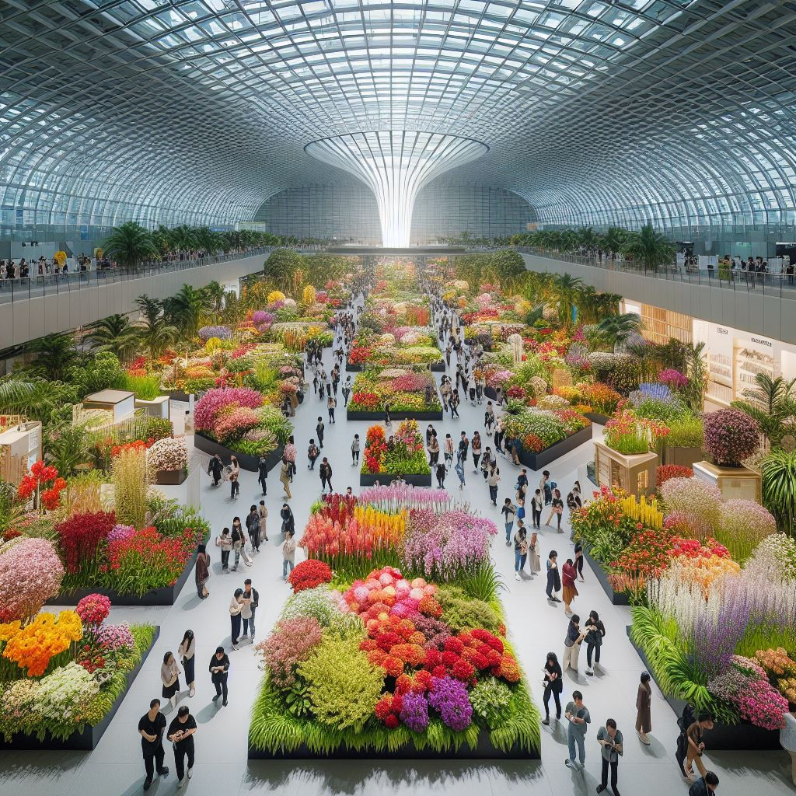

Weatherforcast for the next 24 hours:
Plenty of Sunshine Wind: 7km/h SSE; Ther: 21°C; Hum: 82%
JJANG POST
2024년 5월 17일
2024 고양국제꽃박람회, 아름다운 자연 속으로의 초대
by 장다희
2024 고양국제꽃박람회가 현재 열려 관람객들의 뜨거운 반응을 이끌어내고 있다. 이번 꽃박람회는 경기도 고양시 일산호수공원에서 개최되며, 4월 26일부터 5월 12일까지 총 17일간 진행된다. 다채로운
꽃과 식물의 향연이 펼쳐지고 있다.
고양국제꽃박람회는 실내와 실외 전시로 나뉘어져 있어 관람객들에게 다채로운 경험을 선사하고 있다. 밝고 환한 햇살 아래 실외에는 튤립, 장미를 비롯한 다양한 종류의 꽃들이 예쁘게 피어 있어
관람객들의 시선을 사로잡고 있다. 또한 꽃박람회장 내 곳곳에는 플라워 아트 작품들이 장식되어 있어 관람객들의 눈을 즐겁게 만들고 있다.
봄의 화려한 향연, 고양에서 펼쳐지는 꽃의 축제
실내 전시장에는 특별한 화훼 아트 전시와 정원 설계 공모전 등의 다양한 프로그램이 준비되어 있다. 관람객들은 시원한 실내 공간에서도 꽃의 아름다움을 감상하며 다채로운 문화 경험을 즐길 수
있다.

행사가 진행되고 있는 동안, 수많은 관람객들이 꽃박람회를 즐기며 행복한 시간을 보내고 있다. 더운 날씨에도 불구하고, 가족들이 함께 모여 꽃들을 감상하며 즐거운 봄날을 보내고 있다. 또한
연인들은 사진을 찍으며 로맨틱한 분위기를 만들어가고 있으며, 친구들끼리는 함께 즐거운 이야기를 주고받으며 꽃박람회를 즐기고 있다.
2024 고양국제꽃박람회는 자연의 아름다움과 문화의 만남이 어우러진 특별한 장소로, 많은 이들이 함께하며 소중한 순간들을 나누고 있다. 계속해서 다양한 이벤트와 프로그램이 예정되어 있으니, 꽃을
사랑하는 모든 이들은 꼭 한 번 방문하여 특별한 경험을 즐겨보길 바란다.